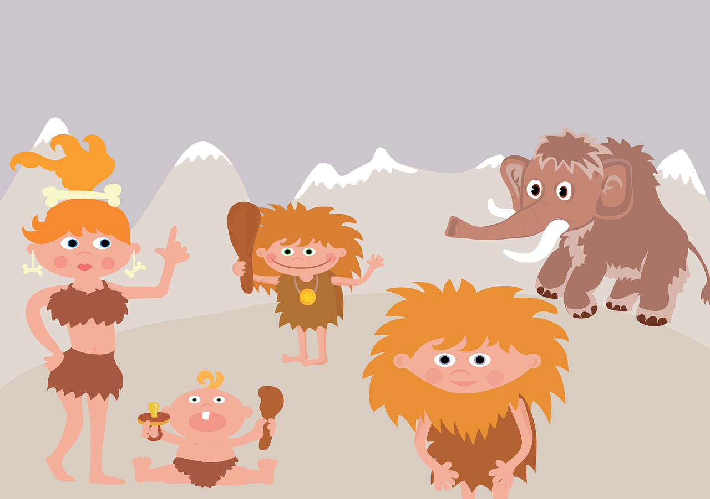

Pequeños historiadores, estamos llegando al fin de nuestra unidad sobre la prehistoria... ¿Qué pena verdad?
Lo hemos pasado genial descubriendo como eran, como vivían, que comían y muchas más cosas de los hombres del pasado. Pero todo llega a su fin.
Yo, Rocky, me despido de vosotros/as. Espero que hayáis aprendido mucho conmigo y sobretodo, que vuestro pasaporte prehistórico este lleno de conocimientos.
Para acabar, os dejo una actividad donde queda resumido todo lo que hemos aprendido. Eso si, perdonadme porque se me borraron unas cuantas palabras mientras lo escribía... Tendréis que escribirla vosotros.
¡NOS VOLVEREMOS A VER PRONTO AMIGOS!
Pixabay/Grafikazesky. Familia Rocky P.D: Me vuelvo con mi familia. Aquí os dejo una foto para que los conozcáis.
Rellenar huecos
En esta última actividad debéis encontrar la palabra adecuada para completar el texto sobre la prehistoria. Pensad cuál puede ser la palabra correcta y escribidla.
¡Mucha suerte!
Chicos acordaos de escribir correctamente las mayusculas y las minúsculas.